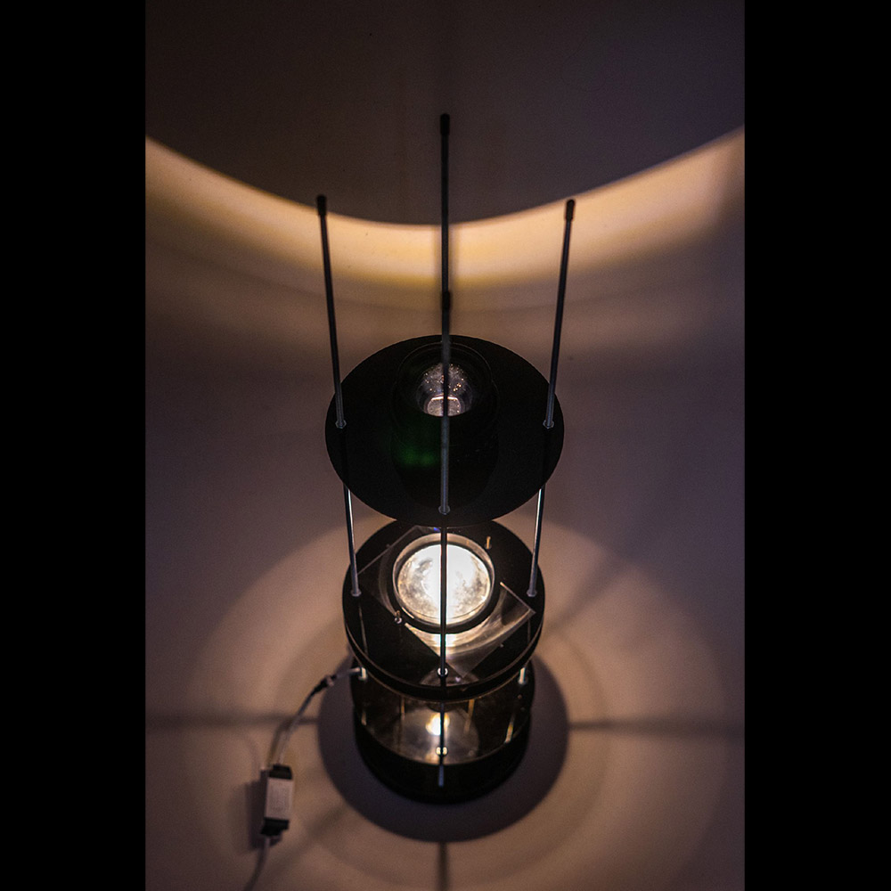

Cymatics are patterns formed on the surface of a vibrating liquid. I found that by projecting and focusing light through this liquid, the patterns can be displayed as an image on a two dimensional surface. Progressing from assembling prototypes from second hand slide projectors and bass amplifiers to precise laser cut shapes I have focused on using the technique to visualise music.
At Pratt I explored applications for voice assistants. Through the accompanying shell that I designed for the product I gained understanding of the place of technology in product design. By using a pool of water, the normally opaque process of music visualisation is transparent to the user — this lends to the charm of the product and should not be hidden.
2021
